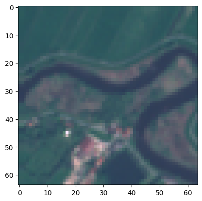
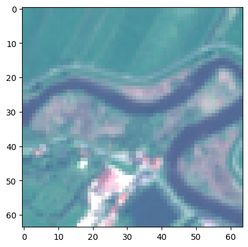
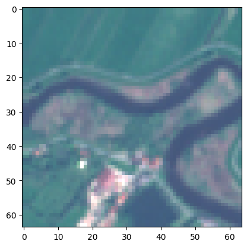
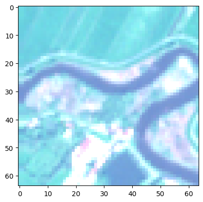
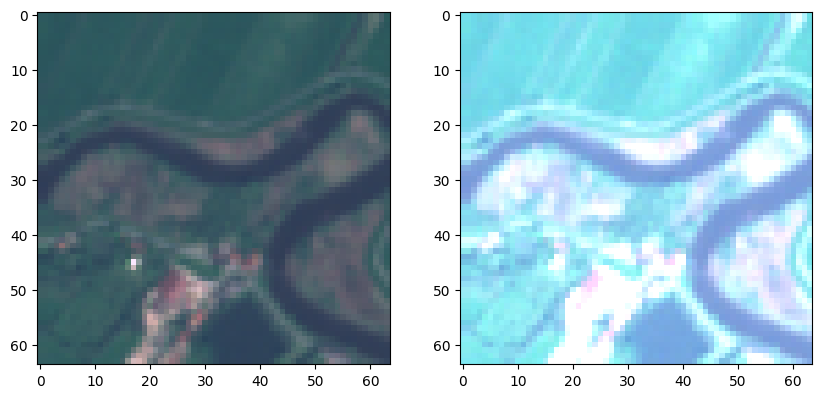

from torchgeo.datasets import EuroSAT100
import fastai.vision.all as fvcore
core utils

load_tif
load_tif (fpath:Union[str,pathlib.Path], chnls_last=True)
Loads a geotiff file, transpose its channels if necessary, and return the image data as a numpy array.
Parameters
fpath(str|pathlib.Path): The file path of the image to be loaded.chnls_last(bool, optional): If set toTrue, the function will return the image data in the format (height, width, channels) (h, w, c). If set toFalse, the function will return the image data in the format (channels, height, width) (c, h, w). Default value isTrue.
Returns
numpy.ndarray: The image data as a NumPy array. The shape of the array depends on the value ofchnls_last.- If
chnls_lastisTrue, the returned array will have the shape(height, width, channels). - If
chnls_lastisFalse, the returned array will have the shape(channels, height, width).
- If
| Type | Default | Details | |
|---|---|---|---|
| fpath | Union | file path of the image to be loaded | |
| chnls_last | bool | True | transpose from c,h,w to h,w,c (assume c,h,w on rio.read input) |
| Returns | ndarray | ndarray will return either h,w,c or c,h,w depending on chnls_last is True or False |
Explore loading geotiffs
# load a sample geotiff dataset
sat_path = fv.untar_data(EuroSAT100.url); sat_pathPath('/home/butch2/.fastai/data/EuroSAT100')sat_path.ls()(#1) [Path('/home/butch2/.fastai/data/EuroSAT100/images')]sat_images = fv.get_image_files(sat_path); len(sat_images)100sat_image = sat_images[10]; sat_imagePath('/home/butch2/.fastai/data/EuroSAT100/images/remote_sensing/otherDatasets/sentinel_2/tif/River/River_2160.tif')data = load_tif(sat_image) # channels last is the default
(type(data), data.shape) # height,width, channels(numpy.ndarray, (64, 64, 13))data = load_tif(sat_image, chnls_last=False)
data.shape # channels, height, width(13, 64, 64)open_tif
open_tif (fn:Union[str,pathlib.Path], chnls:[<class'int'>]=None, chnls_last:bool=True, cls=<class 'torch.Tensor'>)
Creates a tensor from a TIFF image file.
Parameters
fn(str): The path to the TIFF image file.chnls(list of int, optional): The channels to load from the image. Default toNone, which loads all channelschnls_last(bool, optional): IfTrue, the channel dimension is the last dimension. Default toTrue.cls(class, optional): The class of the tensor to create. Defaults totorch.Tensor
Returns
Tensor: A pytorch tensor created from the TIFF image file.
| Type | Default | Details | |
|---|---|---|---|
| fn | Union | The path to the TIFF image file | |
| chnls | [<class ‘int’>] | None | The channels to load from the image |
| chnls_last | bool | True | If True, the channel dimension is the last dimension |
| cls | _TensorMeta | Tensor | The class of the tensor to create |
| Returns | Tensor | A tensor array of the image |
Loading geotiffs as Tensors
t1 = open_tif(sat_image)(type(t1), t1.shape)(torch.Tensor, torch.Size([64, 64, 13]))GeoTensorImage
GeoTensorImage (x, chnls_first=False)
A TensorImage for geotiffs
Can contain more than 3 channels (e.g. 12 band sentinel-2 images) as well as a bigger range of values (16-bit vs 8-bit) than your typical image formats
Attributes
chnls_first(bool): If True, the format of the tensor is c,h,w else its h,w,c where c = channels, h = height, w = width
Methods
create(data, chnls, chnls_first): (classmethod) create aGeoTensorImagefrom a file or numpy arrayshow(chnls,scaler,bright, ctx): display a GeoTensorImage
GeoTensorImage.create?Signature: GeoTensorImage.create( data: Union[pathlib.Path, str, numpy.ndarray], chnls: [<class 'int'>] = None, chnls_first: bool = True, ) -> fastai.torch_core.TensorImage Docstring: (class method) Returns an instance of the class with the input image data formatted appropriately. If input is Path/str and ends with "tif", opens it using open_tif function. If input is np.ndarray, transposes it if chnls_first. Otherwise, input is used as is. ## Parameters: - `data` (Union[Path, str, np.ndarray]): The image data that the class method is called on. - `chnls` ([int]): An optional list of channels to filter. Defaults to None, which does no filtering. - `chnls_first` (bool, optional): A boolean flag indicating whether the channels are in the first or last dimension of the input array. Defaults to True. ## Returns - GeoTensorImage: An instance of the GeoTensorImage class with appropriate image formatting. File: /tmp/ipykernel_21397/1243907552.py Type: method
Creating GeoTensorImages from a file
geo_img = GeoTensorImage.create(sat_image)geo_imgGeoTensorImage: torch.Size([13, 64, 64])geo_img.show?Signature: geo_img.show( chnls: [<class 'int'>] = [3, 2, 1], scaler: float = 1.0, bright: float = 1.0, ctx: matplotlib.axes._axes.Axes = None, ) -> matplotlib.image.AxesImage Docstring: Shows the GeoTensorImage object in a matplotlib figure. Args: chnls: A list of channel indices to show. The default is [3, 2, 1]. scaler: A float value to scale the image by. The default is 1.0. bright: A float value to brighten the image by. The default is 1.0. ctx: A matplotlib context object. The default is None. Returns: The matplotlib Axes image. File: /tmp/ipykernel_21397/1243907552.py Type: method
Showing GeoTensorImages
geo_img.show();
geo_img.show(bright=1.7);
geo_img.show(scaler=0.7);
geo_img.show(scaler=0.7, bright=1.7);
fig,ax = plt.subplots(1, 2, figsize=(10,10))
geo_img.show(ctx=ax[0])
geo_img.show(ctx=ax[1], scaler=0.4)
plt.show()